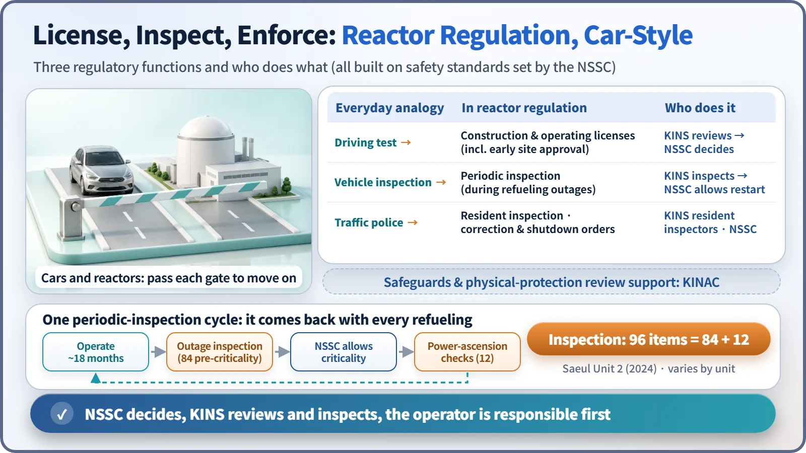
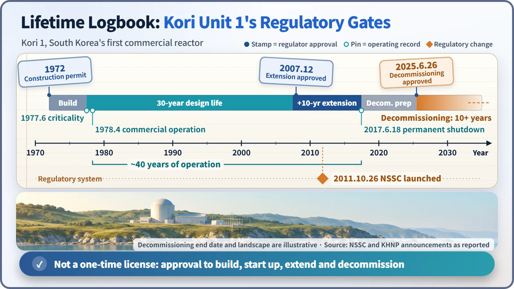

Society, Environment & the Future · 299
What If Your Driving Examiner Worked for a Car Company? — What a Nuclear Regulator Does
Driving examiner, vehicle inspection station and traffic police in one: the regulator guards every gate of a plant's life, from construction permit to decommissioning.
A nuclear regulator sets safety standards, grants licenses, inspects, and orders fixes or shutdowns, and it does so at arm's length from those who promote nuclear energy. Prime responsibility for safety stays with the plant operator; the regulator's job is to check independently that this responsibility is met at every stage of a plant's life. [1]
What if your driving examiner worked for a car company?
Imagine the examiner at your driving test wears a badge reading "XYZ Motors, Sales Team" and says, "If you pass, come take a look at one of our cars." Even if he grades fairly, he has his own reasons for wanting you to pass. Nuclear energy faces the same question: should the side that wants to build and expand nuclear plants also rule on whether those plants are safe? The world's common answer is the nuclear regulator.
The referee wears no team's jersey
In its safety requirements (GSR Part 1), the International Atomic Energy Agency (IAEA) requires every government to make its regulator effectively independent. Article 8 of the Convention on Nuclear Safety also requires regulatory functions to be effectively separated from promotional ones. [1] [2]
One point is easy to confuse. Prime responsibility for operating a plant safely lies with the company that runs it (the licensee). The regulator does not run plants; it checks independently, from the outside, that the licensee lives up to that responsibility. The driver drives, while a third party runs the tests and enforces the rules. [3]
South Korea has written this principle into its institutions. Nuclear R&D promotion and safety regulation used to sit under the same ministry. In July 2011 the Nuclear Safety Act was enacted separately from the promotion law, and on 26 October 2011 the Nuclear Safety and Security Commission (NSSC) was launched as an independent regulator. Today it is a commission under the Prime Minister, and nine commissioners, including the chair, vote on its decisions.
Licenses, inspections and traffic police
Borrowing from the world of cars, a regulator's work has three faces.
The first is the driving examiner. A plant needs a construction permit before it is built and an operating license before fuel is loaded, each granted after reviewing thousands of pages of safety analysis (a preliminary safety analysis report for construction, a final one for operation). There is also an early site approval step, in which only the site is approved ahead of the construction permit.
The second is the vehicle inspection station. Plants in South Korea typically run for about 18 months and then stop for a planned maintenance outage to replace fuel, and that is when they undergo a periodic inspection. Eighteen months is not fixed by law and varies by unit, but the reactor can restart only after passing. One periodic inspection of Saeul Unit 2, for example, covered 96 items: 84 were checked before the reactor was restarted, and the remaining 12 while power was being raised.
The third is the traffic police. Regulatory inspectors stay at the plant site to watch operations, and when standards are breached they issue correction orders or orders to stop operating.

| Everyday analogy | In reactor regulation | Who does it |
|---|---|---|
| Driving test | Construction permit, operating license (incl. early site approval) | KINS reviews, NSSC decides |
| Vehicle inspection | Periodic inspection during refueling outages | KINS inspects, NSSC allows restart |
| Traffic police | Resident inspection, correction and shutdown orders | KINS resident inspectors, NSSC |
The final decisions are made by the NSSC; the technical organization that digs into the reports and performs site inspections is the Korea Institute of Nuclear Safety (KINS). The Korea Institute of Nuclear Nonproliferation and Control (KINAC) works on a different track: it supports regulatory review and inspection for safeguards, which use ledgers and seals to confirm that no nuclear material has gone astray, and for physical protection (security) against threats aimed at facilities. Responsibility for installing and maintaining protection systems still rests with the licensee.
The stamps in one plant's life
Kori Unit 1, South Korea's first commercial nuclear plant, shows that licensing is not a one-time event. It received its construction permit in 1972, first reached criticality in June 1977, and began commercial operation in April 1978. When its 30-year design life ended in June 2007 it stopped, then restarted after receiving approval for 10 years of continued operation that December; like renewing a driver's license, each approval covers 10 years. The unit was permanently shut down on 18 June 2017, and on 26 June 2025 the NSSC granted South Korea's first decommissioning approval. Decommissioning is expected to continue for more than 10 years.

For more than half a century, the plant had to ask the regulator at every stage, "May we move on?" That is the biggest difference from a car, which is finished with a single scrappage notice.
And in the United States?
In 1974 the United States split up the Atomic Energy Commission (AEC), which had both promoted and regulated nuclear energy. The regulatory half, launched in 1975, is the Nuclear Regulatory Commission (NRC). It has five commissioners; an operating license runs for an initial 40 years, with each renewal adding 20; and resident inspectors work at every plant. The numbers differ from South Korea's 10-year renewal unit, but the backbone, keeping promotion and regulation apart, is the same.
Two misconceptions
"Surely the regulator is either for nuclear power or against it?" Neither. Whether to build more plants or fewer is a policy matter for the government and the legislature. The regulator judges only whether a facility meets the standards, just as a driving examiner doesn't decide how many cars should be sold.
"Isn't KINS the one that issues licenses?" KINS carries out reviews and inspections; licenses and approvals are decided by the NSSC.
Key takeaways
A nuclear regulator is a driving examiner, a vehicle inspection station and a traffic police force rolled into one. It guards every gate in a plant's life, from the construction permit to the decommissioning approval, and for its rulings to be trusted it must stand apart from those who promote nuclear energy. Behind a one-line headline like "Regulator allows restart" stand dozens of inspection items.